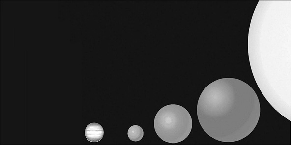

Güneş kütlesindeki bir yıldızın yaşamı boyunca H-R Şeması’nda izleyeceği yol görülüyor. Güneş’imiz sonunda bir beyaz cüce olacaktır.
3. Bölüm - BÜYÜK ÖLÇEKLİ EVREN
29-Evren’de başka yaşam var mı?
400 yıldır teleskoplarla, 80 yıldır radyoteleskoplarla ve yaklaşık 50 yıldır da uzay araçlarıyla yakınımızdaki-uzağımızdaki Evren köşelerini araştırıyor, inceliyoruz. Dünya’ya Evren’e ve yaşama bakışımızı değiştiren çok şey öğrendik, ancak hâlâ en merak ettiğimiz konulardan birini açıklığa kavuşturamadık: Acaba Evren’de Dünya’dan başka bir yerde yaşam var mı?
Evren’de yaşam araştırmaları temelde iki koldan ilerliyor. Birinci kolda Güneş Sistemi’nde başka bir gezegende ya da uyduda, belki de bir asteroitte, mikroorganizma ya da daha üst düzey canlıların varlığına yönelik araştırmalar yer alıyor. İkinci koldaysa Evren’in herhangi bir köşesinde kendileriyle iletişim kurabileceğimiz kadar akıllı canlılardan gelecek radyodalgalarını yakalamaya yönelik araştırmalar bulunuyor.
Dünyadaki ilk televizyon yayını 1936’da yapılan Berlin Olimpiyatları ile birlikte Almanya’da başlamıştı. O günden bu yana Evren’e radyodalgalarıyla kendimizle ilgili sürekli görüntüler gönderiyoruz. Uzayda ışık hızıyla ilerleyen bu dalgalar şu anda 75 ışık yılı çaplı bir küre içindeki bütün yıldızlara ve onların -varsa- gezegenlerine ulaşmış durumdadır. Eğer oralarda bizimki gibi bir teknoloji geliştirmiş canlılar yaşıyorsa, bu yayınları yakalayabilir ve bize yanıt verebilirler. Aynı şekilde bizim de Evren’in herhangi bir köşesinde yaşayan zeki canlıların gönderdiği iletileri yakalama şansımız var. Tek yapmamız gereken uygun ve güçlü kulaklarla (radyoteleskoplar) uzayı dinlemek. Bu işi 25 yıldır yapan bir kurum da zaten var: SETI Enstitüsü.

ATA’nın 42 teleskopluk ilk aşaması tamamlandı ve 2007’de çalışmaya başladı.
1984’te kurulan SETI Enstitüsü(4) Evren’de yaşamın kökenini, doğasını ve yaygınlığını anlayıp açıklamaya çalışan, kâr amacı gütmeyen bir organizasyon, devlet desteği almayan bir kuruluştur. Eskiden büyük teleskoplarla her yıl belli ve sınırlı zamanlarda SETI çalışmaları yürütülüyordu. Ama artık ATA var.
ATA (Alan Telescope Array - Alan Teleskop Dizisi), 1997’de Kaliforniya’daki SETI Enstitüsü’nde ortaya atılan bir fikir üzerine geliştirilen bir birleşik teleskop projesidir. Bilgisayar ve iletişim teknolojilerindeki gelişmeler sayesinde çok sayıda küçük teleskoptan oluşan ATA Projesi’nin amacı 2020’de bir hektarlık bir alanda (100 m x 100 m) her biri 6,1 m çaplı, aynı doğrultuda 350 küçük teleskoptan oluşan birleşik bir teleskop yapmaktır; bütün teleskoplar aynı

1963’te ABD’de Ohio Devlet Üniversitesi’nde 80 dönümlük bir arazide Kraus-tarzı bir büyük radyoteleskop kuruldu. Büyük Kulak adı verilen bu radyoteleskopla ilk ve sürekli SETI çalışması başlatıldı. Çalışmalar yandaki golf sahasını büyütmek için radyoteleskopun söküldüğü 1995 yılına kadar sürdürüldü.
anda, aynı yöne hareket edecek. Bu birleşik teleskop 100 m çaplı büyük bir teleskop gibi çalışacak. Amacı karanlık madde ve karanlık enerji araştırmaları için Samanyolu dışındaki 250.000 radyo kaynağını incelemek, SETI araştırmaları için gökadamızdaki 1.000.000 yıldızı incelemek ve karadelik taraması yapmak. ATA sayesinde yıl boyu sürekli araştırma yapılacak. 2007’de 42 teleskopluk ilk aşaması tamamlandı ve çalışmalara başlandı. Ne yazık ki parasal sorunlar nedeniyle Nisan 2011’de çalışmalar askıya alındı.
ATA şimdiye kadar yapılmış en pahalı ama en yoğun “uzaylı” arama girişimidir. Bu konumunu SKA çalışmaya başlayana dek koruyacak. SKA da (Square Kilometer Array - Bir Kilometrekare Dizisi) tıpkı ATA gibi çok sayıda küçük teleskoptan oluşacak başka bir radyoteleskop projesidir. Bir kilometrekarelik bir alanı kaplayacak olan SKA’nın yapımına 2016’da başlanacak ve ilk gözlemler de 2019’da başlayacaktır. 20 ülkenin katılımıyla gerçekleştirilecek dev teleskopla, SETI’nin yanı sıra, gökada oluşum ve evrimi, karanlık madde ve karanlık enerji ve kozmik manyetizma konularında araştırmalar yürütülecektir.
Samanyolu’nda kaç zeki uygarlık olduğunu bilemiyoruz. Ancak bilimsel birtakım öngörülere ve olasılıklara dayanan bir “tahmin formülü”müz var. 1961’de gökbilimci Frank Drake, Samanyolu’nda iletişim kurabileceğimiz zeki uygarlık sayısını veren bir denklem üretti. Artık Drake denklemi diye anılan bu denklemin çarpanlarını birtakım olasılıklar oluşturuyordu.
Drake denklemi Evren’in tarihi, Güneş Sistemi’nin tarihi ve yeryüzünde yaşama ilişkin bilgilerimize dayanan bir denklemdir. Denklemde zeki uygarlıkların var olmasını sağlayacak bütün değişkenlere yer verilmişti. Denklemdeki yalnızca bir değişken hakkında fikrimiz vardır, ama geri kalan altı değişkene ilişkin herhangi bir şey bilmiyoruz. Böyle olunca da o değişkenlere çok geniş bir yelpazede olasılık verilebiliyor. Sonuç olarak da Drake denkleminin sonuçları birbirinden çok farklı çıkabiliyor. Yine de her yıl yüzlerce bilim insanı bu denklem üzerinden tahmin yürütmeyi sürdüregelmiştir.
Bu eşitlikte çıkacak sonuç, eşitlikteki değişkenlerin alacağı olasılık değerlerine göre değişir. Denklemin mucidi ve SETI’nin eski başkanı Drake, 1961’de kendi olasılık oranlarına dayanarak yaptığı hesapla Samanyolu’nda 10.000 zeki uygarlık olması gerektiği sonucuna ulaştı. (Evren’de 125 milyar dolayında gökada olduğu düşünülürse, bütün Evren’de iletişim kurabileceğimiz zeki uygarlık sayısı 10.000 x 125.000.000.000 = 1,25 x 1015 olur.)
Evrende zeki yaşam olasılığını veren formül
N = R x fp x fc x ne x fl x fi x L
N = Samanyolu’nda iletişim kurabileceğimiz uygarlıkların sayısı
R = Samanyolu’nda her yıl doğan yıldız sayısı
fp = gezegeni olan yıldızların oranı
fc = yaşamın ortaya çıkabileceği gezegen/uydu oranı
ne = yörüngesi yaşanabilir bölgede olan gezegen/uydu oranı
fl = zeki canlıların ortaya çıkabileceği gezegen oranı
fi = iletişim kurulabilecek teknoloji geliştirmiş olanların oranı
L = uygarlığın yaşam süresi
Drake’in hesabından 30 yıl sonra, 51Pegasi’nin çevresinde dönen ilk Güneş dışı gezegen keşfedildi. Bu gezegenin kütlesi Jüpiter’inkinin yarısı kadardı, ama yıldızına çok yakın olduğundan bir yılı ancak 4 gündü. Yüzey sıcaklığı da 1000oC’ın üzerindeydi. 51Pegasi’den sonra her yıl neredeyse yüzlerce yeni gezegen bulunmaya başlandı. Gerçi uzun bir süre bulunanların hiçbiri yaşamı destekleyecek koşulları taşımıyordu. Gezegenleri bulma çabalarının ilk 10 yılında hep Jüpiter büyüklüğünde ya da daha büyük, sıcak ve yıldızına yakın olduğu için hızlı dönen gezegenler bulundu. Ne var ki, daha o dönemde bile gökbilimciler, Samanyolu’nda Dünya benzeri milyonlarca gezegen olduğundan emindiler; yalnızca keşfedilmeyi bekliyorlardı. 2007’de 5 Dünya kütlesinde bir gezegen keşfedildi: Gliese581c. 20 ışık yılı ötedeki Gliese581c, bir anlamda ikinci Dünya’ydı; büyüklüğündeki benzerlikten başka yıldızından uzaklığı da yaşamı destekleyecek bölgenin içinde kalıyordu. Drake denkleminde bir değişkene ilişkin iyi bir fikrimiz oluşmaya başladı. 2008’de aynı yıldızın çevresinde dönen bir başka süper Dünya keşfedildi: Gliese581d. Gerçi yaşanabilir kuşağın ötesinde kalıyordu ama, sera etkisi gerçekleşmişse bunun da yüzeyi sıvı su bulunması için yeteri kadar ılık olabilirdi.


1974’te 305 m çaplı Arecibo radyoteleskopuyla 24.000 ışık yılı ötedeki M13 yıldız kümesine çok güçlü bir ileti gönderildi. Zeki bir canlı, ikili düzende yazılı ve içeriğinde insan bedeni, DNA, Güneş Sistemi ve Arecibo çanağı bulunan iletiden, hakkımızda birçok şey öğrenebilir (Gerçi ileti gönderilmeden önce bir grup bilim insanına verilmiş ve ondan ne anladıkları sorulduğunda, pek çözememişler! Belli ki iletinin bizden biraz daha zeki canlıların eline geçmesi bekleniyor).

Radyodalgalarıyla gönderilen iletiden başka, 1970’li yıllarda Güneş Sistemi’nin dört köşesine ve oradan da yıldızlararası uzaya gönderilen Pioneer 10, Pioneer 11, Voyager 1 ve Voyager 2 uzay araçlarına birer plak kondu. Bunlarda da bizimle ve Dünya’nın konumuyla ilgili temel bilgiler yer alıyordu. Pioneerlara konan altın plak görülüyor.
Bugünse keşfedilen 526 gezegenden 68’i Dünya’ya benziyor. Bunlardan 54’ü de yıldızlarına yaşam için uygun koşulların oluşabileceği uzaklıktaki yörüngelerde dönüyor. Dünya’da yaşamın ne zaman ve hangi koşullarda ortaya çıktığına bakarak, bu gezegenlerin ve ileride saptanacak daha binlercesinin birçoğunda ilkel yaşam biçimlerinin var olduğunu düşünmek pek de yanlış olmaz.
Uzaylı arama çabalarımızdan bir bölümü, bizimle iletişim kurabilecek zeki canlılara yöneliktir. Öteki bölümüyse özellikle yakın çevremizde, yani Güneş Sistemi’nde en ilkel canlı türlerini bulmaya yönelik olanıdır. Astrobiyologlar gezegenlerde, uydularda, hatta asteroit ve kuyrukluyıldızlarda olası mikroorganizmaları araştırmak için önce yeryüzünün uç koşulları olan birtakım ortamlarda yaşayan mikroorganizmaları inceliyor. Böylece uzayda canlı ararken nerelere bakmaları gerektiğini ortaya çıkartıyorlar. Ekstramofiller denen bu grubun üyesi bazı siyanobakteriler, yeryüzünde alışılmışın dışında zorlu bazı fiziksel ve kimyasal koşullarda (aşırı tuzlu, aşırı sıcak ya da soğuk, aşırı asitli ya da bazlı vs.) yaşıyor. Antarktika’da kayaların 1-2 cm içinde, yerin birkaç kilometre altındaki kayalarda, ABD’deki Yellowstone Parkı’ndaki asitli sıcak sularda, okyanus tabanlarındaki sıcak su bacalarında
100 oC’yi aşan sularda yaşayan, bir insanı öldürebilecek dozda radyasyonun 100 katına dayanıklı bakteriler var. Astrobiyologlar zaman zaman bunlardan bazılarını uzaya gönderip, orada da yaşamlarını sürdürüp sürdüremediklerini araştırıyor.

Voyager uzay araçlarına konan altın plak.
Dünya oluştuğunda önceleri yüzeyi kızgın eriyik kayalarla kaplıydı. Sonra yağmurlarla birlikte okyanuslar oluştu. Ama her ikisi de steril ortamlardı. Okyanuslar organik madde açısından çok yoksuldu. Öte yandan gezegenler arası uzay organik madde açısından çok zengindir. Ve uzay yalnızca 100 km yukarısıdır.
Oluşumundan bu yana giderek azalan sıklıkta değişik boyutlarda asteroit ve kuyrukluyıldızlar gezegenimize çarpar. Dinozorları ve onlarla birlikte yeryüzündeki tüm canlı türlerinin yüzde 70’ini yok eden 10 km’lik asteroit gibi göktaşları, yaklaşık her yüz milyon yılda bir ortaya çıkar. Bununla birlikte birkaç santimetre büyüklüğünde olanlar ve daha küçükleri her gün binlerce tonu bulacak şekilde -tıpkı yağmur gibi- Dünya’ya çarpar. Bu göktaşları Güneş Sistemi’nin oluşum döneminden yani 4,56 milyar yıl öncesinden kalan antik yapılardır. Bol miktarda organik madde içeren bu göktaşları Güneş Sistemi’nin oluşum dönemlerinde Dünya’ya çok sık çarpıyordu. Beraberlerinde de bol miktarda su ve organik madde taşıyorlardı. Uzayda dolaşan organik maddelerin yeryüzünde yaşamın ortaya çıkmasında büyük bir rolü olabilir.
Yeryüzünde yaşamın ortaya çıkmasına elverişli koşulların düzelmesi yaklaşık 800 milyon yıl aldı. Ondan sonraki ilk 100 milyon yıl içinde yaşamın ortaya çıktığını gösteren kimyasal fosil kanıtları var. Buradan, eğer uygun koşullar olursa, yaşamın ortaya çıkmasının o kadar da zor olmadığı anlaşılıyor. Aynı durum kuşkusuz başka gezegenler ve onların uyduları için de geçerlidir. Gezegenler arasında, uzak geçmişte bildiğimiz anlamda yaşamı destekleyebilecek olan Mars ve Venüs vardır. Uydulardansa Io, Europa, Enceladus ve Titan bugün bile yaşamın bulunma olasılığı yüksek yerlerdir.
Jüpiter’in bu büyük uyduları gezegenlerine yakın yörüngelerde döndüğünden çok güçlü kütleçekim etkisi nedeniyle içleri sıcak, ama yüzeyleri buzla kaplı, olasılıkla buz tabakasının altında birer okyanus barındıran uydulardır.
Europa belki de Güneş Sistemi’nde yaşam bulma olasılığımızın en yüksek olduğu yerdir. Dünya’dan sonra en büyük ikinci okyanusun -4 milyar yıldır yüzeydeki buz tabakasının altında kalan bir okyanusun- bu uyduda bulunduğuna yönelik kanıtlar giderek artıyor. Dünya’da suyun olduğu her yerde mutlaka canlılarla karşılaşıldığı için, eğer

Buzdan kabuk
Yüzeyin altındaki okyanus
Europa
Europa’da bir yeraltı okyanusu varsa, çok çeşitli canlıların da var olacağına kesin gözüyle bakılıyor. Europa’daki okyanusta yeryüzünde hiç olmayan bitki ve hayvanlar evrim geçirmiş olabilir. NASA on yıl içinde Europa’ya inecek bir uzay aracı üzerinde çalışıyor. Bu araç uyduya indikten sonra, birkaç kilometre kalınlığındaki buzu delip aşağıdaki okyanusa ulaşacak ve onu incelemeye başlayacak.
Jüpiter’in bir başka uydusu Callisto’da da bir yeraltı okyanusu var gibi görünüyor. Belki de Güneş Sistemi’nin uzak bölgelerindeki büyük uydularda, yeraltı okyanusları standart bir durumdur.Titan’daysa su yerine metan bazlı bir yaşam çıkmış olabilir.
Bu yerler, bildiğimiz anlamda yaşamın doğmuş olabileceği yerlerdir. Ne var ki, oralara da gitmek o kadar zordur ki… Ayrıca gidildiğinde oradaki yaşamı bulmak da kolay değildir. Örneğin 35 yıldır Mars’a onlarca uzay aracı gönderildi. Bunlardan altısı yüzeye başarıyla indi ve yıllarca araştırdı; ama canlı izine ya da fosiline rastlayamadı.
30- Kaç gezegen var?
Güneş Sistemi’mizde sekiz gezegen vardır. Çok kısa bir süre öncesine değin gezegenlerin oluşumuna ve evrimine ilişkin geliştirilen kuram yalnızca bu sekiz gezegene yönelik gözlemlere ve onlar hakkında toplanmış bilgilere dayanıyordu. Buradan yola çıkılarak, başka yıldızların çevresinde dönen gezegen sistemlerinin de -eğer varsalar- benzer bir oluşum ve gelişim izlemesi gerektiği düşünülüyordu. Örneğin bu kurama göre, gezegenler yıldızlarına çok yakın bölgelerde oluşamazdı. Ayrıca yıldızdan çok uzak bölgelerde de gezegen gruplaşmaları olamazdı; yani Güneş Sistemi’nde böyleydi, o zaman varsa başka sistemlerde de böyle olmalıydı.
1990’lı yılların başında ilk kez Güneş’ten başka yıldızların çevresinde dönen gezegenler keşfedilmeye başlandı. Bu keşiflerle birlikte gezegen sistemlerinin oluşum ve evrimlerine ilişkin yerleşik düşünceler de altüst oldu. Örneğin gözlemler Jüpiter büyüklüğünde hatta daha büyük bazı gezegenlerin kendi yıldızlarına Merkür’ün Güneş’e olan uzaklığından daha yakın yörüngelerde bulunduğunu ve çok hızlı döndüklerini gösterdi. Güneş Sistemi dışında bulunan bu gezegenler (bunlara Güneş öte-gezegenler de deniyor) istisna olmaktan çıktılar; neredeyse standart durum oldular. Bunun sonucunda Güneş Sistemi’mizdeki gezegenlerin durumunun aslında genel bir “gezegen oluşumu ve evrimi” kuramına hiç de temel oluşturamayacağı anlaşıldı. Hatta bugüne değin bulunan 600 dolayında gezegen ve onların kendi yıldızlarıyla olan ilişkileri göz önüne alındığında, Güneş Sistemi’nin biraz sıra dışı özellikler taşıdığı ortaya çıktı.
16. yüzyılda Kopernik’in Güneş-merkezli evren kuramının ateşli savunucusu İtalyan düşünür Giordano Bruno, geceleri gökyüzünde görünen yıldızların da aslında çevrelerinde gezegenlerin döndüğü birer Güneş olduğunu ileri sürmüştü ve Kilise tarafından sapkınlıkla suçlanıp yakılmıştı. 18. yüzyılda böyle bir olasılıktan Newton da söz etmiştir. O dönemlerde birçok gökbilimcinin aklına yatan bu düşüncenin gerçek olduğunu kanıtlamak çok zordu. 19. yüzyıl boyunca başka yıldızların çevresinde, ne yazık ki çok yetersiz teleskoplarla gezegen arayan birçok gökbilimci hüsrana uğramıştır. Bu durum 20. yüzyılın ortalarına dek sürmüştür.

Mart 2009’da yörüngeye yerleştirilen Kepler Uzay Teleskopu (KUT) için
3,5 yıllık bir çalışma süresi öngörülüyor. Kepler sürekli aynı bölgeye bakacak ve 150.000 ana kol yıldızını inceleyecek.
Çok gelişmiş bir teleskop olan Kepler’den şimdiye kadar gelen verilere göre Samanyolu’nda yaşamın ortaya çıkmasına elverişli gezegen sayısı 100 milyon dolayında olabilir.

KUT’un Ocak 2011’de keşfettiği güneş dışı gezegen Kepler 10b ile Dünya’nın karşılaştırması görülüyor. Hacmen Dünya’dan 2,7 kat ve kütle olarak da 4,6 kat büyük olan bu yeni gezegen 560 ışık yılı ötedeki Kepler-10 yıldızının çevresinde keşfedilmiştir. Kepler-10 da yaklaşık Güneş büyüklüğünde ve 12 milyar yaşında bir yıldızdır.
Öte-gezegenlerden ilki 1992’de keşfedildi. Hem de bu gezegen sıradan bir ana kol yıldızının değil, bir nötron yıldızının çevresinde dönüyordu -nötron yıldızları, büyük kütleli yıldızların süpernova yaparak malzemelerini uzaya saçmasının ardından geride kalan ve neredeyse tümüyle nötronlardan oluşan büyük kütleli ama çok küçük hacimli gökcisimleridir. Bir ana kol yıldızının çevresinde dönen ilk gezegense 1995’te saptandı. O tarihlerden günümüze dek hem bu tür gezegenleri arama/bulma yöntemleri arttı ve gelişti, hem de gözlem ve veri değerlendirme aygıtlarının teknolojisi çok ilerledi.
2011 sonlarında başka yıldızların çevresinde dönen 598 gezegen saptanmış durumdaydı. Yaklaşık 20 yıldır keşfedilen gezegenlerin büyük bölümü Jüpiter’e benzeyen büyük gezegenlerdi. Dünya kütlesinden ancak birkaç kat büyük olan çok az sayıda gezegen keşfedilebilmiştir. Bu durum aslında gözlem ve inceleme aygıtlarımızın duyarlılık düzeyiyle ilgilidir. Daha küçük gezegenleri keşfetmek için çok daha duyarlı aygıtlar gerekir. Teknolojik olarak gelişen aygıtlarla birlikte yıldızların çevresinde bulunan küçük gezegenlerin sayısı da artmaya başladı. Bilim insanlarının öngörüleri, saptanması güç olan küçük gezegenlerin, gelişen teknoloji sayesinde, zamanla dev gezegenleri sayıca geçeceği yönündedir.
COROT, ESA ile Fransız Uzay Ajansı’nın (CNES) birlikte geliştirip fırlattığı ve amacı öte-gezegenleri bulmak olan bir uzay teleskopudur. İlk gözlemini Ocak 2007’de yapmıştır. Günümüze değin 4500 ışık yıllık bir çevrede, başka yıldızların çevresinde dönen ve Güneş Sistemi’mize benzeyen 14 gezegen sistemi keşfetmiştir. NASA da başka yıldızların çevresinde dönen ve Dünya’ya benzeyen gezegenleri keşfetmek amacıyla bir uzay teleskopu geliştirmiştir: Kepler Uzay Teleskopu. Çok gelişmiş bir teleskop olan Kepler, Mart 2009’da yörüngeye yerleştirildi. 2011’in başına kadar 997 yıldızın çevresinde dönen 1235 gezegen adayı gökcismi saptamıştı. Bunların arasında 68’i Dünya boyutlarındaydı ve 54’ü de yıldızlarının çevresindeki “yaşamın ortaya çıkabileceği” diskin içinde yer alıyordu. Son bulgulara göre gezegeni olan yıldızların yüzde 20’sinde birden çok gezegen bulunuyor ve yüzde 6’sının çevresinde de Dünya benzeri gezegenler var.
Yavaş yavaş ortaya çıkan “büyük resim”, yıldızların çoğunun çevresinde gezegen sistemlerinin bulunduğunu gösteriyor. Yaklaşık 200 milyar yıldızın yer aldığı gökadamız Samanyolu’nda belli ki bir o kadar da gezegen var. Hatta gezegen sayısı yıldız sayısından bile çok olabilir; çünkü yıldızların çevresinde dönen gezegenlerden başka yıldızlararası uzayda başıboş dolaşan ve saptanması çok güç olan gezegenler de var.

Şimdiye kadar keşfedilen dış gezegenlerin yıllara göre dağılımı.

Evren akıl almaz derecede büyüktür; onunla ilgili sayılar da öyle. Samanyolu’nda 200 milyar (200.000.000.000) dolayında yıldız bulunuyor. Evren’de de yaklaşık 125 milyar dolayında gökada olduğu hesaplanmış durumda. Buradan yola çıkılarak yapılan kaba bir hesapla Evren’de 1022 (200 milyar x 125 milyar) yıldız olduğu kolayca görülür. Her 100 yıldızdan birinin çevresinde Güneş Sistemi benzeri bir gezegen sisteminin bulunduğu kabul edilsin; ki artık çok daha yüksek olduğu düşünülüyor; o zaman Evren’de yaklaşık 1020 gezegen sistemi olduğu görülür. Evren’in 13,8 milyar yaşında olduğu ve Güneş Sistemi benzeri gezegen sistemlerinin de zaman içinde eşit aralıklarla oluştuğu kabul edilirse; bir başka deyişle 1020 gezegen sisteminin 13,8 milyar yıl içinde eşit zaman aralıklarıyla doğduğu varsayılırsa -bazıları çok genç, bazıları da çok yaşlı olacaktır- yapılacak basit bir hesapla her saat yaklaşık bir milyon Güneş Sistemi’nin oluştuğu ortaya çıkar. Şöyle de düşünebiliriz: 40 yaşına gelmiş birinin yaşamı boyunca Evren’in değişik köşelerinde 700 milyar Güneş Sistemi oluşmuştur.
31- Kahverengi cüce nedir?
1990’lı yılların ortasından itibaren Evren’e ilişkin bildiklerimiz ve bakış açımız çok değişti. Yıldız ve gezegen sistemi oluşumu sürecinde hemen her kütlede gökcisminin ortaya çıkabildiğini artık biliyoruz. Bunlar 100 Güneş kütlesindeki büyük ana kol yıldızlarından Merkür küçüklüğündeki gezegenlere kadar değişiyor. Bu geniş yelpazede küçük ve sönük yıldızlar, gaz devi gezegenler ve Dünya benzeri gezegenler de bulunuyor. Bir de büyüklükleri, gaz devi gezegenlerle en küçük yıldızların arasında yer alan kahverengi cüce denen gökcisimleri var. Kahverengi cücelerin kütlesinin alt sınırının 13 Jüpiter kütlesi ve üst sınırın da 75-80 Jüpiter kütlesi olduğu kabul ediliyor. Gerçekte bu gökcisimlerinin rengi kahverengi değildir; yüzey sıcaklıklarına göre koyu kırmızı ile macenta arasında değişir. Varlıkları 1960’lı yıllarda öngörüldüğünde, onlara “kara yıldız” ya da “kızılötesi yıldız” deniyordu.
Kahverengi cüceler, yıldız olacak şekilde gelişirken, bilinmeyen bir nedenle merkezlerindeki nükleer tepkimelerin durduğu ve sonra gezegen özellikleri ön plana çıkan gökcisimleridir. Bunlar yıldızlara göre küçük, gezegenlere göre de oldukça büyük kütleli olur. Yüzeyleri sıcaktır, ama yıldızlar gibi parlamaz ve ışık yaymazlar. Görünür ışıktan çok kızılötesi ışın yayarlar. O nedenle oldukça sönüktürler. Hem küçük (yıldızlara göre) hem de sönük oluşlarından dolayı, kahverengi cücelerin uzayda saptanması da çok zordur.
1980’li yılların ikinci yarısından itibaren aranmaya başlanan kahverengi cücelerin ilki ancak 1995’te gözlemlenebilmiştir. Keşfedilen ilk kahverengi cüce Teide1, yaklaşık Jüpiter büyüklüğünde ama 55 Jüpiter kütlesindeydi; oldukça yoğun bir gökcismi. 400 ışık yılı ötedeki Teide1 herhangi bir yıldızın çevresinde dönmeyen, yalıtılmış bir kahverengi cüceydi. Aslında bu ilk keşif sıra dışı bir örnekle yapılmış. Tıpkı yıldızlar gibi o da Samanyolu’nun merkezinin çevresinde dönüyordu. Teide1’in keşfinden bu yana yüzlerce kahverengi cüce keşfedildi. Ancak bu kahverengi cüceler arasında, böyle uzayda serbest dolaşanların sayısı şimdilik bir elin parmaklarını geçmez. 1995’te Güneş’ten 19 ışık yılı ötedeki Gliese229 adlı, küçük bir ana kol yıldızının çevresinde dönen bir başka kahverengi cüce (Gliese229B) daha keşfedilmiştir. Böylece kahverengi cüceler varsayımsal gökcisimleri olmaktan çıkmış, temel gökbilim konularından biri olmuştur.

Solda, ABD Kaliforniya’daki Palomar Gözlemevi’nden Ekim 1994’te çekilmiş olan, Gliese229B’nin keşfedildiği fotoğraf görülüyor. Sağdaki fotoğraf da Hubble Uzay Teleskopu tarafından Kasım 1995’te çekilmiş bir başka Gliese229B fotoğrafıdır.

Gliese229B ve Teide1 kahverengi
cücelerinin büyüklük açısından
Gliese229A yıldızı, Güneş ve Jüpiter
ile karşılaştırması.
|
Adı |
Jüpiter |
Gliese229B |
Teide1 |
Gliese229 |
Güneş |
|
Tipi |
gezegen |
k. cüce |
k.cüce |
yıldız |
yıldız |
|
Kütlesi (Jüpiterin kütlesi) |
1 |
30-40 |
55 |
300 |
1000 |
|
Yarıçapı (km) |
71.500 |
65.000 |
150.000 |
250.000 |
696.000 |
|
Yüzey sıcaklığı (K) |
100 |
1000 |
2600 |
3400 |
5800 |
Gliese229B ve Teide1 kahverengi cücelerinin büyüklük açısından
Gliese229A yıldızı, Güneş ve Jüpiter ile karşılaştırması.
Bazı kahverengi cüceler bir yıldızın çevresinde dönerler, bazıları birbirinin çevresinde dönen ikili sistemler halinde bulunurlar ve bazıları da uzayda serbestçe dolaşırlar. 2004’te keşfedilen 2M1207 adlı kahverengi cücenin çevresinde dönen bir gezegen olduğu saptanınca, bazı kahverengi cücelerin kendi gezegenleri, hatta gezegen sistemleri bile olabileceği de anlaşılmıştır.
Önceleri kahverengi cücelerin ender rastlanan gökcisimlerinden oldukları düşünülüyordu. Ama bugüne değin (2011 sonlarında) 625’in üzerinde kahverengi cüce keşfedilmiş durumdadır. Gökbilimciler sürekli yenilerini keşfediyor, onları aramak ve bulmak için de yeni yöntemler geliştiriyorlar. Ayrıca gözlem ve analiz aygıtlarının teknolojisi de hızla ilerliyor. NASA’nın Aralık 2009’da Dünya’dan 525 km uzakta yörüngeye yerleştirdiği WISE adlı X-ışını gözlem uydusu sayesinde Güneş Sistemi’nde daha önce gözlenemeyen asteroitler ve kuyrukluyıldızların yanı sıra, yakın çevremizdeki kahverengi cüceler de aranacaktır. Gökbilimciler Samanyolu’nda yıldız sayısının yüzde 1-10’u kadar (2-20 milyar arasında) kahverengi cüce olabileceğini tahmin ediyor.
32- Yıldızların yaşamı nasıldır?
Gökyüzüne bakıldığında, bütün yıldızlar sanki dev bir kürenin üzerine yerleşmiş gibi görünür. Halbuki hepsi de farklı uzaklıklarda ve büyüklüklerdedir. Bazılarının farklı parlaklık ve renkte olduğuysa, aslında ilk bakışta bile dikkat çeker. Yaklaşık 2100 yıl önce Eski Yunanlı düşünür Hipparkos, 850’den çok yıldızın yerini saptamış ve onların görünür parlaklığını da belirlemişti. Hipparkos yıldızları, en parlak olanlara 1 değeri vererek, 1’den 6’ya kadar sıralamıştı. Günümüzde yıldızlar, parlaklıklarına göre hâlâ bu sıralama temel alınarak sıralanır.
Geceleri gökyüzünde gördüğümüz yıldızların “görünür parlaklığı” iki şeye bağlıdır: O yıldızların gerçek (mutlak) parlaklığına ve bize olan uzaklıklarına. Yıldızlar çok uzaktır. Öyle uzaktırlar ki, en güçlü teleskoplarla bile yalnızca ışık yayan büyük birer nokta şeklinde görülebilirler. Yüzeylerine ilişkin şimdiye kadar en ufak bir görüntü elde edilememiştir. Böylesine sınırlı koşullarda gökbilimciler de yıldızların yapısını anlamak ve doğasını çözmek için çeşitli yöntemler ve bilimsel modeller geliştirmiştir. Bunlar yalnızca o yıldızlardan gelen ışıklara dayanan yöntem ve modellerdir. Basit bir ışık ışını, kaynağına ilişkin çok fazla bilgi içerir. Yıldızların büyüklükleri, onların parlaklık ve yüzey sıcaklıklarından, yüzey sıcaklıkları da tayflarından yararlanılarak hesaplanır. Bir yıldızın kütlesi, yıldızın neredeyse bütün özelliklerini; yarıçapını, parlaklığını, yüzey sıcaklığını vs. belirler.
Yıldızların rengi, yüzey sıcaklıklarına bağlıdır. Tıpkı ısıtılan bir demirin önce kızarması, sonra sararması ve en sonunda da akkor hale gelip beyaz ışık yayması gibi, yıldızlarda da yüzey sıcaklığı rengi belirler. En sıcak yıldızlar mavimsi beyaz renkte olur. Bunların yüzey sıcaklıkları 7000°C ile 40.000°C arasında değişir. Yüzey sıcaklığı en düşük yıldızlar turuncu, sarı ve kırmızı renkte olurlar. Sarı renkli Güneş de gerçekte yüzey sıcaklığı görece düşük (5500°C), küçük kütleli bir yıldızdır.
Yıldızların parlaklık ve sıcaklık bilgilerinin bir arada yer aldığı ve gökbilimcilerin yaklaşık yüzyıldır kullandığı çok önemli bir araç vardır: Hertzsprung-Russell Şeması. Bu şemayı, Danimarkalı kimyacı ve gökbilimci Ejnar Hertzsprung ile Amerikalı gökbilimci Henry N. Russell 1910’da geliştirmiştir. Şemada yıldızların yüzey sıcaklıkları ve renkleriyle parlaklıkları arasındaki ilişki gösterilir. Hertzsprung-Russell Şeması ya da kısaca H-R Şeması diye anılan bu şemaya bakarak, parlaklığı ve rengi bilinen bir yıldızın yaşamının hangi evresinde olduğu anlaşılabilir.
H-R Şeması, onlarca yıl boyunca yapılan gözlemlerden edinilen bilgilerle oluşturulmuştur. Gözlenen ve incelenen yıldızlar şemaya yerleştirildikçe, yıldızların aslında şemanın her yerinde bulunmadığı, ama belli bazı bölgelerde toplandığı fark edilmiştir. Bu bölgelerden en çok yıldız barındıranı, sağ alt köşeden başlayıp sol üst köşeye doğru çıkan kavisli bir hattır. Bu hatta “ana kol” denir. Yıldızların yüzde 95’i ana kol üzerindedir ya da yaygın deyişle onlar birer ana kol yıldızıdır. Ana koldaki yıldızların yüzey sıcaklıkları yüksekse, parlaklıklarının da yüksek olduğu görülür. Şemanın bir başka bölgesindeki, ana kolun sağ üstündeki yıldızların yüzey sıcaklıkları düşüktür. Buna karşın çok da parlaktırlar; çünkü bunlar aslında ana koldan çıkmış, yaşamlarının son evresinde olduklarından hacimleri büyümüş dev yıldızlar ile süper dev yıldızlardır. Öte yandan ana kolun sol altındaki bölgede de yüzey sıcaklıkları yüksek olmasına karşın, parlaklıkları düşük olan yıldızlar bulunur. Bunlar da beyaz cüce denen çok küçük yıldızlardır. Beyaz cüceler yaklaşık Dünya büyüklüğünde olurlar; yani küçük bir yıldız olan Güneş’in milyonda biri kadar. Bu şemadan anlaşılan şey, yıldızların gerçekte her parlaklık ve sıcaklıkta olmadığıdır. Yıldızların iç yapısındaki bazı fiziksel etkenler, onları yalnızca belli sıcaklık-parlaklık kombinasyonlarında var olabilecek şekilde sınırlar.
Yıldızlar, insanlar için binlerce yıl boyunca gizemli nesneler olarak kalmıştır. Onların gizemi ancak fizikte büyük atılımların yaşandığı 19. yüzyıl sonlarında çözülmeye başlanmıştır. Bir yıldızın en temel özelliği uzaya enerji yayıyor olmasıdır. Bütün yıldızların içeriğinin yüzde 98’inden çoğunu Evren’in doğuşu sırasında oluşmuş iki element, hidrojen ve helyum oluşturur. Geri kalan elementlerse yıldızın çekirdeğinde oluşur. Bir bölümü de daha önce yaşamış yıldızların içindeki nükleer tepkimelerde oluşup yıldızın ölümüyle birlikte uzaya yayılmış elementlerdir.
Yaklaşık 150 yıllık gözlemlerin ve incelemelerin sonucunda, yıldızların doğum ve ölüm süreçleri, nasıl bir yaşam sürdükleri ve yaşamları boyunca hangi aşamalardan geçtikleri oldukça iyi anlaşılmıştır. Bu evrimi gösteren bir model oluşturulmuştur. Buna göre yıldızlar gökada içindeki devasa gaz ve toz bulutlarının kendi içine çökmesiyle birkaç milyon yılda oluşur. Ancak içine çöken böyle bir bulutsunun yıldız olabilmesi için, kütlesinin belli bir büyüklüğün üzerinde olması gerekir. Bu da Güneş kütlesinin yaklaşık yüzde 8,5’i kadardır. Kütlesi bundan daha küçük gökcisimlerinde merkezde yeterince ısı olmadığında nükleer tepkimeler başlayamaz. Yeterli kütlesi olan ve kütleçekim kuvvetiyle sürekli küçülen ve dönüş hızı artan bir bulutsu, küçüldükçe ısınır ve yoğunlaşır. Bu sırada şekli de bir diski andırmaya başlar. Merkezinde madde birikimi artar, sıcaklık ve basınç yükselir. Sonunda merkezdeki sıcaklık nükleer tepkimelerin başlayacağı düzeye erişir.
Merkezdeki bu yüksek sıcaklık ve basınç ortamında maddeyi oluşturan elektron ve protonlar birbirlerinden kopmuş bir şekilde ve çok yüksek hızlarda dolaşır. Bu sırada 4 proton, yani hidrojen çekirdeği çarpışarak bir helyum çekirdeği (yeni bir element) oluşturur. Ancak helyum çekirdeği dört protonun toplam kütlesinden daha hafiftir. Aradaki çok küçük kütle farkı (yüzde 0,7’lik bir fark), tepkime sırasında çok büyük bir enerjiye dönüşür. Ortaya çıkan muazzam enerji, yıldızın içinde yavaş yavaş dışa doğru ilerler. Yüzeye varınca da uzaya ışık olarak yayılır. Yıldız artık doğmuş ve ışımaya başlamıştır. Yıldızların ışımaya başladıkları andan ölüm belirtileri göstermeye başladıkları ana kadar süren kararlı dönemlerine, “ana kol” dönemi denir. Bir başka deyişle yıldız bu dönemde H-R Şeması’ndaki ana kolda yer alır.
Yıldızın merkezinde ortaya çıkan enerjinin oluşturduğu dışa doğru basınç, yıldızın dev kütlesinin merkeze doğru çökmesini durdurur. Kuşkusuz dışa doğru basıncı oluşturan enerji, yıldızın merkezinden dışa doğru yayılır ve sonra da yoluna uzayda devam eder; yani kaybolur. Ama giden enerjinin yerini dolduran enerji yıldızın merkezindeki nükleer tepkimelerle sürekli yaratılır. Yani sürekli yeni enerji üretilir, ta ki merkezdeki yakıt tükenene kadar...

H-R Şeması yıldız evrimini, yani yıldızların yaşamları boyunca hangi aşamalardan geçeceğini; büyüklüklerinin, renklerinin,
yüzey sıcaklıklarının vs. ne tür değişiklikler göstereceğini ortaya koyar.

Sıcaklık (K)
Beyaz cüce
Gezegen bulutsusu
Ana kol yıldızı
Kırmız
dev
Kırmızı
süper dev
Parlaklık
33- Yıldızlar nasıl ölür?
Sekiz Güneş kütlesinden küçük yıldızlar “küçük yıldız”, ötekiler de “büyük yıldız” olarak tanımlanır. Küçük kütleli yıldızlarda merkezdeki yakıt, yani hidrojen tükenince, helyum “yakılmaya” başlanır. Bu andan itibaren yıldız bir ana kol yıldızı olmaktan çıkar. Artık ömrünün son aşamasına gelmiştir. Bu yeni süreçte, merkezde üretilen enerji ve oluşan basınç, yıldızın içine çökmesi için çalışan kütleçekim kuvvetini dengelemenin ötesine geçer. Bunun sonucunda merkezden uzak bölgelerde (zayıf bir kütleçekimle yıldıza bağlı olan) maddeler hızla uzaya doğru genişlemeye başlar. Yıldız sanki ikiye bölünmüş gibidir: Merkezde ışıyan ve küçülen “çekirdek” ve uzaya doğru giderek genişleyen üst katmanlar vardır. Yıldız bir dizi aşamadan geçtikten sonra bir “kırmızı dev” olur; öylesine büyür ki, yarıçapı 2-3 AB kadar olabilir. Bu hızlı genişleme sürer ve zamanla yıldızın dış katmanları uzaya yayılır. Yıldızın artık geri dönüşü olmayan bir şekilde uzaya yayılan bölümüne “gezegenimsi bulutsu” denir. Bu sırada yıldızın çekirdeği de bir süre daha içine çöker. Merkezin içine çöküşü sona erdiğinde, geriye çok küçük ama çok da yoğun; örneğin Güneş kütlesinde ama Dünya büyüklüğünde bir yıldız kalır. Bu tür yıldızlara beyaz cüce denir. Beyaz cücelerin kütlesi 0,2-1,3 Güneş kütlesi arasında olur. Böylesi büyük bir kütlenin Dünya kadar küçük bir hacme sığması nedeniyle, beyaz cücelerin yoğunlukları çok çok yüksektir. -1 ton/cm3 kadar, yani suyun bir milyon katı. Samanyolu’ndaki yıldızların yüzde 95’i küçük yıldızlardır ve sonunda birer beyaz cüce olacaklardır. Beyaz cücelerin kendi enerji kaynakları olmadığından yüzey sıcaklıkları ve parlaklıkları zamanla azalır ve renkleri değişir. Bunlar emekliye ayrılmış yıldızlar gibidir. Artık etkin değillerdir. Sahip oldukları enerjiyi uzaya yayarlar. Bu enerji de giderek azalır ve beyaz cüceler milyarlarca yıl içinde kararır. Güneş’e en yakın 100 yıldızdan sekizi beyaz cücedir.

Yaklaşık 150 ışık yılı ötemizdeki beyaz cüce
IK Pegasi B (solda) ile Güneş’in (sağda) büyüklüklerinin karşılaştırılması.

Gezegenimsi bulutsu adı, keşfedildikleri 18. yüzyılda teleskopların yetersizliğinden dolayı görünüşlerinin dev gezegenlere benzetilmesinden gelir -1784’te William Herschel baktığı bir bulutsunun görünüşünü Uranüs’e benzetip bu adı vermiştir. Gezegenimsi bulutsular sayesinde, yıldızları oluşturan madde yıldızlar arası ortama geri döner. Bu fotoğrafta, yaklaşık 6800 ışık yılı ötedeki Abell39 gezegen bulutsusu görülüyor. Merkezdeki beyaz cücenin kütlesi 0,4 Güneş kütlesi kadardır. Kütlesinin geri kalanını neredeyse kusursuz bir küre (5 ışık yılı çaplı) şeklinde uzaya yaymıştır.
Büyük kütleli yıldızların sonu, küçüklere göre oldukça farklı ve şiddetli olur. En büyük ana kol yıldızları yaklaşık 100 Güneş kütlesindedir. Böyle yıldızlarda yıldızı oluşturan maddeyi yıldızın merkezine doğru çeken kütleçekim kuvveti de büyüktür. Dolayısıyla yıldızın merkezindeki sıcaklık ve basınç da daha büyük olur ve nükleer tepkimeler daha hızlı gerçekleşir. Yani daha çok hidrojen helyuma dönüşür ve daha çok enerji ortaya çıkar. Bunun sonucunda merkezden dışa doğru olan basınç da daha büyük olur. Yıldız daha büyük bir kütleçekim kuvvetiyle ona karşı koyan daha büyük bir basıncın dengesindedir. Ancak bu durumu sağlamak ve sürdürmek için merkezde daha çok madde dönüştürülür, bir anlamda “yakıt” daha hızlı tüketilir. Bu tür büyük kütleli yıldızların yüzey sıcaklıkları yüksek ve parlaklıkları büyük olur, ama çok hızlı da yakıt tükettiklerinden ömürleri kısadır. Güneş’ten on kat daha kütleli bir yıldızın ömrü Güneş’inkinin neredeyse binde biri kadardır.
Bunlarda merkezdeki yakıt tükenince, yeni elementlerin yakıt olarak kullanılması süreci başlar ve bu süreç demire kadar devam eder. Merkezde demirden bir çekirdek oluştuktan sonra süreç durur. Yıldızı hidrostatik dengede tutan güç son kez kesilince, merkez hızla kendi içine çökmeye başlar. Kısa süren bu aşamanın sonunda yıldız süpernova denen korkunç bir patlamayla içeriğinin büyük bölümünü uzaya saçar. Bu patlama sırasında patlamanın enerjisiyle demirden daha ağır elementler oluşur ve uzaya yayılır. Patlamada yayılan ışık bir gökadanın yaydığı ışığa yakındır. Aslında bir süpernovada uzaya yayılan enerjinin ancak on binde biri görünür ışık şeklinde olur.
Eğer yıldızın ilk kütlesi 8-20 Güneş kütlesi arasındaysa, süpernovadan sonra merkezdeki çekirdekten geriye çok çok küçük bir yıldız kalır. Bu sıra dışı yıldızın neredeyse bütün kütlesi nötronlardan oluştuğu için buna nötron yıldızı denir. Bunlar gerçekte yıldız değildir. Kendi ekseninde çok hızlı (saniyede onlarca kez) dönen nötron yıldızları beyaz cücelerden de yoğun gökcisimleridir. Aşırı sıcak ve aşırı derecede de manyetiktirler. Tipik bir nötron yıldızının kütlesi 1,3-2 Güneş kütlesi arasında olur. Çapı da yalnızca 12 km kadardır. Nötron yıldızlarının yoğunlukları 1020 ton/cm3 düzeyindedir.
Eğer ölmekte olan yıldızın ilk kütlesi 20 Güneş kütlesinden daha büyükse, bu kez süpernova sırasında merkezdeki çekirdek nötron yıldızına dönüşmez. Yoğunluğu çok daha yüksek bir gökcismi ortaya çıkar: karadelik.
34- Karadelik nedir?


Evren’deki en şiddetli patlamalardan biri süpernovalardır. Büyükçe bir gökadada, sürekli ışık yayan yüz milyar dolayında yıldız bulunur. Bir yıldız süpernova yaptığında ortaya çıkan enerji, böyle bir gökadadaki yıldızların toplam parlaklığına yakın bir parlaklığa ulaşır. Milyarlarca ışık yılı öteden görülebilir. Bu nedenle uzak gökadaların uzaklıklarının hesaplanmasında, süpernovalardan (belli bir türünden) yararlanılır. Bu fotoğraflarda Samanyolu’ndan 108 milyon ışık yılı ötedeki NGC4526 gökadasındaki bir süpernova görülüyor. SN1994D adı verilen süpernovanın parlaklığı neredeyse gökadanın merkezi kadar.

Dünya
Nötron yıldızı
Beyaz cüce
Bir beyaz cüce, bir nötron yıldızı ve Dünya’nın büyüklük karşılaştırması.
Evren’de her şeyin birbirini çekmesine neden olan kuvvete evrensel kütleçekim kuvveti denir. Bu kuvvet sayesinde, Samanyolu’ndaki yüz milyarlarca yıldız bir arada durur, Güneş’in ve gezegenlerin bütünlüğü (onları oluşturan maddelerin birbirine bağlı kalması) korunur, gezegenler Güneş’in çevresinde döner ve yörüngelerinde kalırlar ve biz de Dünya’nın yüzeyinde dururuz. Yüzlerce yıl boyunca bilim insanları bu gizemli kuvvetin etkisini ve gücünü araştırmıştır. Ama Albert Einstein’a kadar kimse onun nedenini açıklayamamıştır. Einstein’ın açıklaması da oldukça şaşırtıcıdır. Ona göre kütleçekim, nesneleri birbirine çeken bir kuvvet değildir; o yalnızca uzay-zamanın yapısından kaynaklanan bir sonuçtur. Çünkü nesneler Evren’in geometrisine şekil verir ve Evren’in geometrisi de nesneleri birbirine iter.
Einstein’in genel görelilik kuramı, Evren’e bakışımızı tümüyle değiştirmiş, onu daha iyi algılamamızı sağlamıştır. Ne var ki bu güçlü kuram sayesinde, aynı zamanda o ana değin hiçbir bilim insanının düşünemeyeceği kadar garip bir nesnenin de Evren’de var olabileceği fark edilmiştir. Kütlesi çok büyük ama hacmi de çok küçük olan bir nesne, Einstein’ın uzay-zaman diye adlandırdığı Evren’in geometrik yapısını aşırı miktarda eğebilir. Bunun fark edildiği ilk dönemlerde böylesi “kuramsal” bölgelere karadelik adı verilmiştir.
Gerçekten de karadelikler kütleçekim kuvvetinin aşırı hissedildiği yerlerdir. Onlar büyük kütleli yıldızların öldükten sonra aldıkları haldir: Yıldızın içerdiği maddelerin büyük bölümü süpernovayla birlikte uzaya dağılırken geride birkaç Güneş kütlesinde bir karadelik kalır.
Karadelikler de tıpkı gezegenler ve yıldızlar gibi kendi eksenlerinde döner. Kuşkusuz pratik olarak hiçbir zaman bir karadeliğin içinde ne olduğu bilinemeyecek. Ancak onların varlığını öngören kurama göre, bir karadeliğin merkezinde uzay-zamanda bir delik açılmış gibidir. Dolayısıyla uzay-zamanın dışında bir bölgedir ve orada kütleçekim kuvveti, uzay ve zamandan söz edilemez. Böyle bir noktaya fizikte “tekillik” denir. Tekillik, bilim insanlarının ne düşünmeleri gerektiğini pek de bilemedikleri bir konudur.
Yeryüzünde havaya fırlatılan bir taş yükselir yükselir, bir noktaya geldiğinde durur ve sonra düşmeye başlar. Taş, yukarı doğru ne kadar hızlı fırlatılırsa, o kadar yükseğe çıkar ve sonra düşer. Taşın, Dünya’nın kütleçekim kuvvetinin (ki biz buna yerçekimi diyoruz) etkisinden kurtulup uzayda ilerleyişini sürdürmesi, yani geri düşmemesi için saniyede yaklaşık 11,2 km’lik (saatte 40.000 km) bir hızla yukarı doğru fırlatılması gerekir. Bir gökcisminin kütleçekim kuvvetinden kurtulmak için gereken hıza “kaçış hızı” denir. Üzerinde durulan gezegenin ya da gökcisminin kütlesi büyüdükçe, ondan “kaçış hızı” da artar. Örneğin Güneş’in kütleçekim etkisinden kurtulup onun yüzeyinden uzaya kaçabilmek için saatte 2,2 milyon kilometrelik bir hıza ulaşılması gerekir. Bu durum karadelikler için de geçerlidir. Bir karadeliğe yaklaşıldıkça uzay-zamanın eğikliği artar. Bir başka deyişle kütleçekim etkisi daha çok hissedilir. Dolayısıyla bulunulan noktadan geri dönmek için daha yüksek hızlarla kaçmak gerekir. Ancak her karadeliğin kütlesine bağlı olarak değişen öyle bir uzaklık vardır ki, karadeliği küre şeklinde kuşatan bir sınırdır bu, o noktadaki bir nesne artık Evren’deki en yüksek hız olan ışık hızına bile ulaşsa, karadeliğe düşmekten kendini kurtaramaz. Bu uzaklığa “olay ufku” denir. 10 Güneş kütlesindeki bir yıldız, karadeliğe dönüştüğünde, yaklaşık 30 km çapında bir olay ufku olur.


Bütün nesneler uzay-zamanı eğer. Uzay-zamandaki eğiklik, gökcisimleri onların yakınından geçerken izledikleri yolun, sanki bir kütleçekim kuvvetiyle çekiliyormuşçasına sapmasına yol açar. Karadelikler uzay-zamanı aşırı eğer; çünkü bütün kütleleri tek bir noktada toplanmış gibidir.
Olay ufkunun ötesinde uzay-zamanın yapısı normaldir; daha doğrusu olay ufkundan uzaklaştıkça uzay-zamanın eğikliği azalır, normalleşir. Bir başka deyişle karadelikler aslında çevrelerindeki her şeyi yutan dev canavarlar değildir. Eğer Güneş Sistemi’nin merkezinde Güneş’in yerinde aynı kütlede bir karadelik olsaydı, Güneş Sistemi’nin üyeleri, bu değişikliğin hiç de farkında olmadan merkezdeki nesnenin çevresindeki yörüngelerinde dönüşlerini sürdürürlerdi. Karadeliklerin “korkunçluk”ları yakın çevreleri için geçerlidir.
Kaçış hızı, ışık hızı olacak denli büyük kütleli nesnelerin var olabileceği düşüncesini ilk kez yerbilimci John Michell 1783’te ileri sürmüştü. 1796’da ünlü matematikçi Laplace Markisi Pierre-Simon da yazdığı kitabında aynı görüşe yer verdi. Ne var ki bu tür “kara yıldız”lar, 1800’lü yıllarda bilim gündeminde hiç yer almadı. 20. yüzyılın başında Einstein’ın geliştirdiği genel görelilik kuramı, Evren’de bu tür nesnelerin bulunabileceğini öngörüyordu. 1916’da Karl Schwarzschild bunu fark etti. Yine de izleyen 50 yıl boyunca karadelikler hep kuramsal nesneler olarak ele alındı. Ne var ki yine kuramsal nesneler olduğu düşünülen nötron yıldızlarının ilk örnekleri 1960’lı yılların ikinci yarısında keşfedilmeye başlanınca, karadeliklerin de gerçek olabileceği gündeme geldi. Hiç kimse bir karadelik görmemişti ve göremeyecekti. Ama zamanla üzerinde görüş birliğine varılan dolaylı kanıtlar, karadeliklerin varlığını ortaya koydu.
Gökbilimciler uzun bir süre radyoteleskoplu gözlemlerin sonuçlarına dayanarak gökadaların merkezlerinde de büyük birer karadelik olabileceğini düşündüler. Sonra bunun doğru olup olmadığını kanıtlamak için en yakın örneği, Samanyolu’nun merkezini, özel teleskoplarla gözlemeye başladılar. Yıllar süren gözlemlerin sonucunda elde edilen verilere göre, Samanyolu’nun merkezinde yaklaşık dört milyon Güneş kütlesinde bir süper karadelik olduğunu anlaşıldı. Samanyolu’nda yer alan bütün yıldızlar -bunlara Güneş de dahildir- gökadamızın merkezindeki bu süper karadeliğin çevresinde dönmektedir.
Artık neredeyse bütün gökadaların merkezinde birer süper kütleli karadelik olduğu düşünülüyor. Yapılan gözlemlere göre, bu karadeliklerin kütlelerinin de gökadanın toplam kütlesinin binde biri dolayında olduğu ve gökadaların hem oluşumunda hem de gelişiminde önemli roller oynadıkları tahmin ediliyor.
Süper kütleli karadeliklerin yanı sıra, bütün gökadalarda milyonlarca “normal” karadelik bulunduğu da kabul ediliyor. Karadeliklerin gerçek nesneler olduğu düşüncesinin ilk çıktığı dönemlerde, bilim insanları arasında onların ender rastlanan, sıra dışı yapılar olduğu ve hiç açıklanamayacakları kanısı egemendi. Artık yaygın olan düşünce, karadeliklerin Evren’in en temel öğelerinden olduğu ve onun gelişimini de önemli şekilde etkiliyor olabileceğidir.

Normal (süper kütleli olmayan) karadelikleri uzayın karanlığında saptamak olağanüstü zordur; çünkü hem çok çok küçük, hem de “kara”dırlar. Hiçbir ışık yaymadıkları gibi, kendilerine gelen ışıkları da yansıtmazlar. Yine de onları “görmenin” bir yolu vardır. Karadelikler başka maddelerle etkileşime girdiklerinde (yani onları yutarken) maddeler olay ufkuna yaklaştıkça çok ısınır ve böylece belli dalgaboylarında ışık yayarlar.
35- En yakın yıldızlar hangileridir?
Evren’deki nesnelerin kütleleri, uzaklıkları, hızları ve sayıları kavrama yetimizin sınırlarını zorlayacak, hatta aşacak kadar büyüktür. Basit bir örnek olarak Dünya ile Güneş arasındaki uzaklığı ele alabiliriz: 150.000.000 km. Ağzımızdan kolayca çıkıveren, rahatça söylediğimiz ya da basitçe yazıverdiğimiz bu uzaklık, Dünya’nın çevresinin yaklaşık 4000 katıdır. Saatte 1000 km (ses hızının yüzde 80’i) hızla uçan bir uçak Dünya’nın çevresini tam 40 saatte dolaşır; Güneş’e ulaşmasıysa hiç durmaksızın uçarak 17 yıl sürer. Oysa Güneş’ten çıkan bir ışık ışının Dünya’ya varması için yalnızca 500 saniye (8 dakika 20 saniye) yeterlidir. Bir başka deyişle Güneş, Dünya’ya 500 ışık saniyesi uzaktadır. Güneş dışındaki en yakın yıldızlarınsa bize uzaklığı birkaç ışık yılıdır. Yani Güneş’ten en az 270.000 kat daha uzaktırlar.
Yıldızlar arası uzaklıklar gerçekten de algılamamızı zorlayacak kadar büyüktür. Dünya’dan Güneş’e durmaksızın 17 yılda giden uçağın en yakın yıldıza ulaşması 4,5 milyon yıl sürecektir. İnsan yapımı en hızlı araçlar, 1974 ve 1976’da Güneş’i incelemek için fırlatılan Helios A ve Helios B uzay araçlarıdır. Bunların hızı Güneş’in çevresinde dönerlerken saatte 250.000 km’yi (ışık hızının 4300’de biri) bulmuştur. Uçaktan tam 250 kat hızlı ilerleyen böyle bir uzay aracıyla en yakın yıldıza gitmek bile 18.000 yıl sürecektir. Buradan, mekânsal olarak uzayda yalıtılmış, ücra bir bölgede yer aldığımızı düşünebiliriz. Ne var ki bu durum, yalnızca Güneş için geçerli değildir. Samanyolu’ndaki yıldızlar arası uzaklıklar, ortalama 5-10 ışık yılıdır. Bir başka deyişle bütün yıldızlar, ortalamada birbirleriyle benzer uzaklıktadır.
On ışık yılı yarıçaplı bir küre içinde Güneş’in çevresinde yalnızca 11 yıldız vardır. 50 ışık yılı yarıçaplı bir kürenin içindeyse 1400 dolayında yıldız sisteminde yaklaşık 2000 yıldız bulunur. Samanyolu’nda Güneş gibi yalnız yıldızlar azdır. Yıldızların çoğu genellikle ikili, ama bazen üçlü ya da daha çoklu yıldız sistemleri şeklinde olur. Bu 2000 yıldızdan 64’ü Güneş’e benzeyen yıldızlardır. 100 ışık yılı yarıçaplı bir kürenin içindeyse, Güneş benzeri 512 yıldız bulunur. Bu yıldızların çevresinde, aralarında Dünya benzeri gezegenlerin olduğu gezegen sistemleri bulunma olasılığı vardır. Son 18 yılda keşfedilen ve hemen hepsi en az Jüpiter kütlesinde olan öte-gezegenlerden 29’u Güneş’i kuşatan 50 ışık yılı yarıçaplı kürenin içindeki 8 yıldızın çevresinde dönmektedir. Aynı şekilde 100 ışık yılı yarıçaplı kürenin içindeki 19 yıldızın çevresinde de 54 gezegen keşfedilmiştir.

1. yıldız
2. yıldız
merkez
Samanyolu’nda yıldızların önemli bir bölümü ikili yıldız sistemi şeklinde bulunur. Bu ikili yıldız sistemlerinde yıldızlar genellikle bir merkezin çevresinde döner.
Güneş’e en yakın yıldız 4,24 ışık yılı (yaklaşık 40 trilyon kilometre) ötedeki Proxima Centauri’dir; kısaca Proxima da denir. 1915’te keşfedilen Proxima, 0,12 Güneş kütlesinde, yüzey sıcaklığı 3000°C dolayında olan bir kırmızı cücedir ve çıplak gözle görülemez. Kendisinden 13.000 AB (0,2 ışık yılı) ötedeki Alfa Centauri A ve B ikili yıldız sisteminin çevresinde döner. Bu, üç yıldız Alfa Centauri sistemi (üçlü yıldız sistemi) olarak ele alınır. Ama bir olasılık Proxima, öteki iki yıldızın çevresindeki bir yörüngede olmayıp yıldızlararası uzayda ilerlerken bu iki yıldızın kütleçekimsel etkisiyle geçici bir süre için onlara yakınlaşmış olabilir. Çok yakın bir yıldız olduğundan oldukça iyi incelenen Proxima’nın çekirdeğindeki hidrojeni çok yavaş tükettiği ve bu nedenle dört trilyon yıl kadar daha ana kol yıldızı olarak kalacağı tahmin ediliyor. Son 30.000 yıldır Güneş’e en yakın yıldız olan Proxima 33.000 yıl kadar daha bu özelliğini sürdürecek. O tarihten sonra, şu anda 10,3 ışık yılı uzakta olan ama hızla Güneş’e yaklaşan, Ross 248 bize en yakın yıldız olacak.
Güneş’e en yakın ikinci yıldız Alfa Centauri sistemidir (α Cen A ve α Cen B) ve çıplak göze tek bir yıldızmış gibi görünür. Bu iki yıldız Güneş’e 4,37 ışık yılı uzaktadır. Birbirlerine uzaklıkları 80 yıllık bir periyot içinde 11 AB ile 36 AB arasında değişir. Yaklaşık 1,1 Güneş kütlesindeki α Cen A ve 0,9 Güneş kütlesindeki α Cen B, Güneş’ten 300 milyon yıl kadar daha yaşlı iki yıldızdır. Yapılan gözlemler bu yıldızların çevresinde Jüpiter kütlesinden büyük gezegenler bulunmadığını göstermiştir. Dünya büyüklüğündeki gezegenleriyse saptamak şimdilik olanaksızdır.
Barnard yıldızı 5,9 ışık yılı uzaklığıyla Güneş’e en yakın dördüncü yıldızdır. Küçük kütleli (0,17 Güneş kütlesinde) bir kırmızı cücedir. Çıplak gözle görülemez. 7-12 milyar yaşında olduğu tahmin edilmektedir. Bu haliyle Samanyolu’ndaki en yaşlı yıldızlardan biridir. Yapılan tüm gözlemlere karşın, çevresinde herhangi bir gezegen saptanamamıştır. Eğer varsa, bunlar Jüpiter’den daha küçük kütleli gezegenler olmalıdır.
7,8 ışık yılı uzaktaki Wolf 359, Güneş’e en yakın beşinci yıldızdır. Bir kırmızı cüce olan Wolf 359 ancak büyükçe bir teleskopla görülebilir. 0,09 Güneş kütlesindeki bu yıldızın çapı Jüpiter’in çapının 1,5 katıdır. Bu haliyle Wolf 359, yıldız olmanın en alt sınırındadır. Çok genç bir yıldızdır. Yaşının 100-350 milyon arasında olduğu tahmin ediliyor.
Altıncı yıldız Lelande 21185 de çıplak gözle görülemeyecek denli sönük bir kırmızı cücedir. 8,26 ışık yılı ötede ve 0,46 Güneş kütlesindedir. Yaşının 5-10 milyar yıl arasında olduğu düşünülüyor. Güneş Sistemi dışındaki ilk gezegenlerin keşfedilmeye başlandığı 1990’lı yılların ikinci yarısında, birkaç gezegenden oluşan bir gezegen sistemi olabileceği ileri sürülmüştü. Ancak bu sav hâlâ kanıtlanamamıştır.
Sirius (Akyıldız) gökyüzündeki en parlak yıldızdır. Aslında biri Güneş kütlesinde, öteki de Güneş’in 2 katı kütlede iki yıldızdan oluşan bir ikili yıldız sistemidir. Daha küçük kütleli olan Sirius B, bir beyaz cücedir; orijinal halinin Güneş’in 5 katı kütlede olduğu tahmin ediliyor. İki yıldızın arasındaki uzaklık 50 yıllık bir periyotta 8 AB ile 31 AB arasında değişir. Sirius sistemi yaklaşık 200-300 milyon yaşındadır ve Güneş’ten 8,6 ışık yılı uzaktadır.
|
Yıldız |
Uzaklığı |
Kütlesi |
Yaşı |
Saptanan gezegen sayısı |
|
Gliese878 |
15 |
0,334 |
4,893 |
4 |
|
Gliese581 |
20 |
0,311 |
4,326 |
4 |
|
81 Virginis |
28 |
0,954 |
8,960 |
3 |
|
56 Canori |
40 |
1,026 |
5,543 |
5 |
|
HD69830 |
41 |
0,856 |
7,446 |
3 |
|
HD40307 |
42 |
0,752 |
1,198 |
3 |
|
Upsilon Andromedae |
44 |
1,010 |
3,781 |
4 |
|
47 Ursae Majoris |
46 |
1,029 |
7,434 |
3 |
|
Mu Arae |
51 |
1,077 |
6,413 |
4 |
|
HD113538 |
52 |
0,698 |
1,278 |
2 |
|
Gliese777 |
52 |
1,037 |
12,110 |
2 |
|
HD128311 |
54 |
0,804 |
0,394 |
2 |
|
14 Herculis |
57 |
0,902 |
0,706 |
2 |
|
83 Leonis B |
59 |
0,777 |
4,486 |
2 |
|
HD217107 |
65 |
1,019 |
7,320 |
2 |
|
HD60532 |
83 |
1,444 |
2,671 |
2 |
|
23 Librae |
85 |
1,047 |
7,322 |
2 |
|
HD181433 |
87 |
0,777 |
8,974 |
3 |
|
HD82943 |
90 |
1,175 |
3,080 |
2 |
Güneş’in çevresindeki 100 ışık yılı yarıçaplı kürenin içinde keşfedilen gezegen sistemli yıldızlar ve onların bazı temel özellikleri.
Luyten 726-8, aynı zamanda Gliese 65 olarak da bilinen ikili bir yıldız sistemidir. Luyten 726-8A ve Luyten 726-8B, Güneş’e 8,7 ışık yılı uzaktadır. Bunlar birbirinin çevresinde 26,5 yılda bir dönen 0,1 Güneş kütlesinde iki kırmızı cücedir. Yaklaşık 31.500 yıl sonra bu ikili, şu anki komşuları Epsilon Eridani’ye bir ışık yılı kadar yakınlaşacak ve büyük olasılıkla onun Oort Bulutu’nun içine girecektir. Bu sırada da uzun periyotlu kuyrukluyıldızların Epsilon Eridani’ye doğru harekete geçmesine yol açacaklardır. Bu yakınlık 4500 yıl boyunca sürecektir.

Güneş
α Cen A
α Cen B
Proxima
Güneş ve ona en yakın üç yıldızın büyüklük karşılaştırması.
Güneş’in çevresindeki 10 ışık yılı yarıçaplı kürenin içinde yer alan son yıldız, Ross 154’tür. Bu, bize 9,7 ışık yılı uzakta bir kırmızı cücedir. Çıplak gözle görülemeyecek denli sönüktür. 0,17 Güneş kütlesinde olan Ross 154, bir milyar yaşından daha gençtir. 150.000 yıl içinde Güneş’e yakınlaşarak aradaki uzaklığı 6,1 ışık yılına düşüreceği hesaplanmıştır.

Lalande 21185
Sirius
Wolf 359
Luyten 726 8
Barnard
Ross 154
10
5
A
B
Proxima
α Centauri A B
Güneş’e 10 ışık yılından daha yakın yıldızlar.
36- Gökada nedir?
Gökadalar çok büyük yapılardır ve gökbilimcilerce Evren’in yapıtaşı olarak kabul edilirler. Bir gökadada yıldızlar, bu yıldızlardan birçoğunun çevresinde dönen gezegen sistemleri, gaz ve tozdan oluşan yıldızlararası madde ve şimdilik hakkında çok az şey bilinen, ama aslında çok önemli bir öğe olan karanlık madde bulunur. Gökadalar büyüklüklerine göre birkaç milyon ile birkaç trilyon arasında yıldız içerebilirler. Gözlem verileri bütün gökadaların olmasa da çoğunun merkezinde süper kütleli bir karadeliğin bulunduğunu ortaya koymaktadır. Gökadanın içerdiği maddeler de bu karadeliklerin çevresinde döner. Yıldız yoğunluğu gökadaların kenarlarına gidildikçe azalır. Görünen Evren’de 125 milyarın üstünde gökada olduğu tahmin ediliyor.
Gökadalar da tıpkı yıldızlar gibi değişik büyüklüklerde ve parlaklıklarda olur. Yıldızlardan farklı olarak şekilleri de değişik olabilir. En küçük gökadalar büyükçe bir yıldız kümesi kadardır ve birkaç milyon yıldız içerir. Çapları 100 ışık yılı kadar küçük olabilir. En büyük gökadalarda trilyonlarca yıldız vardır. Bazılarının çapı 6 milyon ışık yılı kadar olabilir. Bu, aslında birçok küçük gökada kümesi kadar büyük bir yapıdır.
Gökadalar en temelde görünüşlerine göre üç grupta sınıflandırılırlar: elips gökadalar, sarmal gökadalar ve düzensiz gökadalar. Sarmal gökadalar da kendi içinde normal sarmal ve çubuklu sarmal olmak üzere iki gruba ayrılır. Güneş’in de içinde bulunduğu Samanyolu çubuklu sarmal bir gökadadır. Evren’deki gökadaların neredeyse yarısı sarmaldır. Özellikle sarmal kollarda yoğun bir yıldız oluşumu sürer ve bu nedenle sarmal kollar mavimsi görünür. Elips gökadalar çok az toz içerir ve yıldız oluşumunun varlığını gösteren izlerden yoksundur. Genellikle de kırmızı ağırlıkta olurlar.
İlk büyük teleskoplarla gözlemlendiğinde gökadaların aslında Güneş’ten çok da uzak olmayan güzel şekilli bulutsular oldukları düşünülmüştü. 1750’de Thomas Wright Samanyolu’nun gerçekte yıldızlardan oluşan disk şeklinde bir yapı olduğunu ve görünen bazı bulutsuların da aslında kendi başlarına birer Samanyolu olabileceğini ileri sürdü. 1755’te Immanuel Kant da bu uzak bulutsuları “ada evren”ler olarak tanımladı. 1900’lü yılların başına kadar bu bulutsulardan yüzlercesi, çeşitli yıldız kataloglarında yerlerini aldı. 1912’de Vesto Slipher ve 1917’de de Heber D. Curtis disk şeklindeki bu bulutsuların gerçekte Samanyolu içinde olmaması gerektiğini ileri sürdüler.
Edwin Hubble 1922-1923 yıllarında döneminin en güçlü teleskopuyla yaptığı gözlemlerde Andromeda Bulutsusu’nun gerçek uzaklığını saptadı. Andromeda’nın da aralarında olduğu sarmal birçok bulutsunun gerçekte Samanyolu’nun dışında ve çok ötesinde olduğunu ve hepsinin de başlı başına birer gökada olduklarını ortaya koydu.
Çok büyük olmayan bir ölçekte bakıldığında, gökadaların Evren’e düzenli bir şekilde dağılmadığı görülür. Gökada çiftleri, birkaç gökadadan oluşan küçük gruplar, kümeler ve süper kümeler gibi değişik büyüklüklerde gruplar halinde bulunurlar. Bu tür gruplardaki gökadaların arasında genellikle birkaç milyon ışık yılı uzaklık olur.
En az 50 gökadadan oluşan gruplara “küme” denir. Samanyolu’nun da içinde yer aldığı küçük grubun adı Yerel Grup’tur. Yerel Grup’ta Samanyolu’ndan başka iki büyük sarmal gökada daha (M31-Andromeda ve M33) vardır. Geri kalanlar hep cüce gökadalardır. Gökada süper kümeleriyse onlarca küme içeren, on milyonlarca ışık yılı yarıçaplı dev yapılardır. Evren’e çok daha büyük bir ölçekte bakıldığında, bütün kümelerin ve süper kümelerin, aralarında büyük boşluklar bulunan ipliksi bir doku oluşturduğu ve her yanda eşit yoğunlukta (belli bir hacim içinde aynı sayıda) oldukları görülür.
Gökadaların üç temel hareketi vardır. Birincisi yakınlarındaki gökadaların ve gökada kümelerinin kütleçekim etkisiyle bölgesel olarak yaptıkları harekettir. Kümelerde grup içi kütleçekim etkileşimleri gökadaları birbirlerine yaklaştırabilir, hatta çarpıştırabilir. Bunun yanında gökadaların büyük bir bölümü kendi ekseninde döner. Bu iki hareket görece yavaş hareketlerdir ve ortalama olarak saniyede birkaç yüz kilometrelik hızlarda olurlar. Bunlar gökadaların uzayın içinde yaptıkları hareketlerdir. Gökadaların, Evren’in genişlemesinden kaynaklanan üçüncü hareketiyse çok hızlıdır. Bunda gökadalar uzayla birlikte hareket eder. Uzay genişledikçe içindeki gökadaları da beraberinde taşır. Sonuç olarak bütün gökadalar, uzaklıklarıyla orantılı olarak birbirlerinden uzaklaşır. Bu durum herhangi bir kümede yer almayan bağımsız gökadalar için geçerlidir. Bir küme içinde yer alan gökadalar Evren’in genişlemesinden etkilenmez ve küme içinde değişik yönlerde hareket edebilirler. Bununla birlikte küme, bir bütün olarak Evren’in genişlemesi yönünde ilerler.
Evren’in ilk dönemlerinde Evren daha küçükken ve gökadalar da birbirlerine daha yakınken, gökadalar arası etkileşim daha büyüktü. Gözlemler, birçok büyük gökadanın bir zamanlar ayrı gökadalar olan iki ya da daha çok küçük gökadanın birleşmesiyle bugünkü büyüklüğüne ve şekline kavuştuğunu düşündürtüyor.

Andromeda ya da öteki adıyla M31, yaklaşık 2,5 milyon ışık yılı ötede, 200.000 ışık yılı çapında ve kütlesi Samanyolu’nun 1,5 katı olan büyük bir gökadadır. Samanyolu ve Andromeda saniyede yaklaşık 100 km’lik bir hızla birbirlerine yaklaşmaktadır; bu hızla 3 milyar yıl sonra birleşmeleri beklenmektedir.
Gökada kümelerinin kızılötesi teleskoplarla incelenmesi sonucunda, kümelerdeki gökadaların arasında (yani küme içi gökadalar arası uzayda) kümenin toplam kütlesinin yüzde 10 kadarını gazların oluşturduğu ortaya çıkmıştır. Bir başka deyişle tıpkı gökadaların içinde olduğu gibi dışında da dev gaz bulutları vardır. Bunlar hidrojen iyonlarından oluşur. Bunun yanında gökadalar arası uzayda toz bulutları da vardır. Samanyolu’nun 10 milyon ışık yılı çevresindeki uzayda dört büyük toz bulutu saptanmıştır.
37- Samanyolu nasıl bir gökadadır?
Işık kirliliğinin olmadığı bir yerden gece gökyüzüne bakıldığında, tıpkı beyaz bir tül gibi bir ufuktan ötekine gökyüzünü kapladığı görülen şey aslında Güneş Sistemi’nin de içinde bulunduğu Samanyolu gökadasının bir bölümünden başka bir şey değildir. O yalnızca, gökadanın merkezine bizden birkaç bin ışık yılı daha yakın olan sarmal kollardan birindeki milyarlarca yıldızın oluşturduğu bir görüntüdür. Aslında bulunduğumuz noktadan Samanyolu’nun merkezine doğru baktığımızda, gökadamızın şekline ilişkin pek bir bilgi elde edemeyiz. Çünkü bu, sanki madeni bir paraya yandan bakmak gibidir. Ne var ki Samanyolu’nun dışına çıkıp ona bakma olanağımız da yoktur. (35 yıl önce fırlatılan Voyagerlar daha yeni Güneş Sistemi’nin dışına çıkabilmiştir.)
Samanyolu çok büyük bir yapıdır. Eğer Güneş Sistemi’nin bir CD büyüklüğünde olduğu düşünülürse, Samanyolu’nun büyüklüğünün Dünya kadar olduğunu düşünmek gerekir.
Samanyolu yukarıdan bakıldığında, sarmal yapılı bir diske benzer. Çapı yaklaşık 100.000 ışık yılı ve kalınlığı da yalnızca birkaç bin ışık yılıdır. Samanyolu’nda kaç yıldız olduğu tam olarak bilinemiyor; ancak 100-400 milyar arasında olduğu hesaplanıyor. Genellikle de 200 milyar yıldız olduğu söyleniyor. Başka yıldızların çevresindeki gezegenlere yönelik yapılan son keşiflerden sonra, Samanyolu’ndaki yıldızların çevresinde dönen 50 milyar dolayında gezegen bulunduğu ve bunların da 500 milyonunun (yüzde 1’inin) yörüngesinin kendi yıldızının çevresindeki yaşamın ortaya çıkabileceği bölgede yer aldığı tahmin ediliyor.
Gökadamızın ortasında, yıldızların yoğun olarak bulunduğu, yaklaşık 12.000 ışık yılı çapında küresel bir şişkinlik vardır. Burada genellikle yaşlı, sarı ve turuncu renkli yıldızlar bulunur. Yaşı saptanabilen en yaşlı yıldız 13,2 milyar yaşındadır. Buradan da Samanyolu’nun 13,2 milyar yaşından daha genç olamayacağı ve Büyük Patlama’dan yaklaşık 600 milyon yıl sonra oluştuğu sonucuna varılmıştır. Bir de “hale” denen yaklaşık 130.000 ışık yılı çapında bir başka yapı vardır ve Samanyolu’nu kuşatır. Halede binlerce küresel yıldız kümesi bulunur; küresel yıldız kümeleri yıldızların yoğun olarak bulunduğu bölgelerdir ve yüz binlerce yıldızdan oluşurlar. Bunlara ek olarak Samanyolu’nun çevresinde gökada tacı ya da “karanlık hale” denen ve karanlık maddeden oluşan bir başka küresel yapı daha bulunur. Bu, Samanyolu’nun en büyük ve en gizemli öğesidir. Merkezden 100.000 ışık yılı ötede başladığı sanılan gökada tacının, 300.000 ışık yılı öteye kadar uzandığı ve Samanyolu’ndaki bilinen maddelerin (bütün yıldızlar, gaz ve toz) kütlesinin yaklaşık on katı kadar kütleli olduğu hesaplanmıştır.

Samanyolu’na yönelik teleskoplu ilk gözlemleri, gökyüzündeki daha başka birçok nesneyi gözleyen Galilei 1609’da yapmıştır. Galilei gece gökyüzünde görünen tül benzeri yapının aslında çok sayıda yıldızdan oluştuğunu fark etmişti. Daha önceleri onun gazdan bir bulut olabileceği düşünülüyordu.

Samanyolu’nun yukarıdan bakıldığında neye benzediğini bilemeyiz. Ancak yüzlerce yıldır yapılan gözlemler sayesinde, gökadamıza ilişkin büyük bir bilgi birikimimiz oluşmuş durumdadır. Ayrıca güçlü bilgisayarlarımız var. Bunların yanında binlerce gökadanın görüntüsüne sahibiz. Dolayısıyla yukarıda görüldüğü gibi, Samanyolu’nun nasıl bir şekli olduğunu tahmin etmek aslında o kadar da zor değildir.
Samanyolu’nun ilginç bir başka öğesi de merkezinde bulunan süper kütleli karadeliktir. Yaklaşık dört milyon Güneş kütlesinde olan bu dev yapı, kendi ekseninde 11 dakikada bir döner. Samanyolu da (yani gökada içindeki her şey) dev bir tekerlek gibi merkezdeki bu süper kütleli karadeliğin çevresinde döner. Hem de çok yüksek hızlarda... Yıldızların dönüş hızı saniyede 200-240 km arasındadır. Güneş ve onunla birlikte bütün Güneş Sistemi de bu hızla (210-240 km/s) ilerler. Güneş’in gökada içindeki yörüngesi çembere yakın bir elips şeklindedir ve Güneş bu yörüngedeki bir turunu 200-250 milyon yılda tamamlar. Güneş Sistemi’nin 4,56 milyar yaşında olduğu düşünülürse, yaşamı boyunca yaklaşık 20 kez bu turu tamamladığı anlaşılır. Yaşamının sonuna kadar da yine 20 kez daha dönecektir.
Yüksek hızlı bu dönüş sırasında kütleçekimsel olarak birbirlerini etkileyen/rahatsız eden yıldızların yönleri değişir. Bazı yıldızlar gökada dışına fırlatılır. Bazıları da süper kütleli karadeliğe düşer. Yıldızlar küresel yıldız kümelerinde, açık yıldız kümelerinde ya da küçük bir bölümü de tıpkı Güneş gibi bağımsız olarak bulunur.

Samanyolu’nun yandan görünüşü
Samanyolu’nun üstten görünüşü
Hale
disk
sarmal kollar
küresel yıldız kümeleri
şişkin bölge
şişkin bölge
Samanyolu’nda yıldızlardan başka gaz ve tozdan oluşan ve bazıları binlerce ışık yılı genişliğinde bulutsular da vardır. Bunlar kütleçekimsel olarak kararsızdır ve zamanla içlerine çökerek yeni yıldızların oluşmasını sağlarlar. Gökadamızda sürekli yeni yıldızlar oluşur; oluşumlarının değişik aşamasında milyonlarca yıldız vardır. Samanyolu’nun oluşumunun ilk dönemlerinde yılda birkaç yüz olan yeni yıldız doğumu, günümüzde yılda 5-6’ya kadar düşmüştür. Samanyolu oldukça kalabalık ve dinamik bir yerdir. Öncelikle değişik büyüklük ve parlaklıklarda yaklaşık 200 milyar yıldız vardır, bu yıldızlardan bazılarının çevresinde gezegen sistemleri bulunur, kahverengi cüceler vardır, ölmüş yıldızların kalıntıları olan beyaz cüceler ve nötron yıldızları vardır, karadelikler vardır ve bütün bu nesnelerden yayılan her dalga boyunda ışık vardır.
Bir zamanlar Evren’in merkezinde olduğumuza inanılırdı. Artık biliyoruz ki, kendi gökadamızın bile merkezinde değiliz. Hatta merkezden oldukça uzaktayız. Gerçekte bu uzaklığı ölçmek o kadar kolay değildir. En son çalışmalara göre, merkezin 25.000-28.000 ışık yılı arasında bir uzaklıkta olduğumuz ortaya çıkmıştır.
Samanyolu’nun sarmal kolları hem yıldız açısından, hem de gaz ve toz açısından zengindir. Buralar yeni yıldızların doğdukları bölgelerdir. O nedenle de mavi, beyaz renkli genç yıldızlar çoktur. Ancak Samanyolu’nun sarmal kollarını gösteren çizimler (haritalar) çok değişkendir. Çünkü bu kolların şekli ve hatta sayısı da hâlâ tartışmalıdır. Birçok kaynakta dört ana kolu ve iki de küçük kolu olduğu ileri sürülür. Ana kolların adları Norma, Scutum-Crux, Sagittarius ve Perseus’tur. Güneş Sistemi bu ana kollardan Sagittarius ile Perseus arasında yaklaşık 3500 ışık yılı genişliğinde ve 10.000 ışık yılı uzunluğundaki Orion Spur’da (Orion Kolu, Orion-Cygnus Kolu ya da Bölgesel Kol olarak da bilinir) yer alır.
38- Yerel grup nedir?

Karanlık hale
Samanyolu
Samanyolu’nu kuşatan ve gökada tacı ya da karanlık hale denen karanlık maddenin küresel bir yapısı olduğu ve normal maddenin kütlesinin yaklaşık 10 katı kadar kütlesi olduğu tahmin ediliyor.

Samanyolu’nu kuşatan ve gökada tacı ya da karanlık hale denen karanlık maddenin küresel bir yapısı olduğu ve normal maddenin kütlesinin yaklaşık 10 katı kadar kütlesi olduğu tahmin ediliyor.
Samanyolu’nun sınırlarının dışına çıkıldığında engin bir boşlukla karşılaşılır. Burası artık gökadaların egemenliğindeki büyük ölçekli Evren’dir. En uzak gökadalar milyarlarca ışık yılı ötededir. En yakın olanlarsa Samanyolu’nun uydusu olan cüce gökadalardır; hatta bunlardan biri, gökadamızla birleşme (çarpışma) sürecindedir. Gökadalar durağan yapılar değildir; tersine saniyede yüzlerce kilometrelik hızlarla yol alan, dev kütleli, kendi eksenlerinde dönen dinamik yapılardır. Kütleçekimsel olarak başka gökadalarla bir arada bulunur, gruplar oluştururlar. Birçok gökadadan oluşan bu tür yapıların küçük olanlarına gökada grubu, büyük olanlarına da gökada kümesi denir. Gökada grubuyla gökada kümesi arasındaki ayrım çok açık değildir; ama genellikle kümelerdeki gökada sayısı 50’nin üzerinde olur.
Gökada kümeleri büyüklük ve içerik açısından değişiklik gösterir ve 50-1000 arasında gökada içerirler. Çapları 6,5-30 milyon ışık yılı arasında değişir ve genellikle 25 milyon ışık yılı kadar olur. Kümeler arası uzaklıklar da ortalama 30 milyon ışık yılı kadardır.
Kümelerdeki gökadalar kütleçekim etkisiyle bir arada bulunur ve küme içinde değişik yönlerde hareket ederler. Bazen birbirleriyle çarpışır ve birleşerek yeni, büyük bir gökada oluştururlar. Ancak küme bir bütün olarak tek yönde ilerler. Kümelerdeki gökadaların toplam kütlesi kümenin yaklaşık yüzde 1’i kadardır. Küme içinde gökadalar arasındaki milyonlarca ışık yılını bulan engin boşluklarda büyük bölümü iyonlaşmış hidrojen ve helyumdan oluşan aşırı yüksek sıcaklıklarda (10-100 milyon derece arasında) dev gaz bulutları olur. Ancak yoğunlukları çok düşüktür -1000 cm3’te ancak bir parçacık. Bunların kütlesi kümenin toplam kütlesinin yaklaşık yüzde 9’unu oluşturur. Kümelerin üçüncü ve belki de en önemli, ama hakkında en az şey bilinen öğesi karanlık maddedir. Kümelerin içerdiği maddenin (atomlardan oluşan, bildiğimiz maddelerin) toplam kütlesinin yaklaşık on katı kadar karanlık madde bulunduğu hesaplanmıştır. Bir başka deyişle kümelerin toplam kütlesinin yüzde 90’ını karanlık madde oluşturur.
Evren’in bu bölgesinde Samanyolu’nun da aralarında bulunduğu 46 gökadalık gruba Yerel Grup denir. Bu adı ilk kez Edwin Hubble kullanmıştır. Ancak onun gözlemlediği Yerel Grup’ta yalnızca 12 gökada bulunuyordu. Yerel Grup’un üye sayısı değişkendir ve yakın çevremizde keşfedilen yeni gökadalarla zamanla artar. Yaklaşık 6 milyon ışık yılı çaplı bir kürenin içine dağılmış Yerel Grup’taki en büyük üç gökada Andromeda (M31), Samanyolu ve Triangulum (M33) sarmal gökadalarıdır. Andromeda ve Triangulum, Samanyolu’na farklı yönlerde yaklaşık 2,5 milyon ışık yılı uzaklıktadır. Öteki 43 gökada, cüce gökadalardır ve çoğu büyük gökadaların çevresinde toplanmıştır.
Samanyolu’nun ve Andromeda’nın 15 dolayında uydusu vardır. Triangulum gökadasınınsa tek bir uydusu bulunur. Yerel Grup’taki öteki küçük gökadalar bağımsız gökadalardır.
Uzun yıllar boyunca Samanyolu’na en yakın gökadanın Büyük Macellan Bulutu olduğu düşünüldü. Ne var ki çok sönük olduğundan ancak 1994’te keşfedilebilen Yay Cüce Gökadasının gerçekte Samanyolu’nun merkezinden yalnızca 52.000 ışık yılı uzakta olduğu anlaşıldı. Çapı 10.000 ışık yılı olan Yay Cücesinde, bir milyar dolayında yıldız bulunduğu tahmin ediliyor. Yay Cücesinin “en yakın olma” özelliği ancak 10 yıl kadar sürdü. Çünkü 2004’te gökbilimciler Samanyolu’nun merkezine 42.000 ışık yılı uzaklıktaki Büyük Köpek Cüce Gökadasını keşfettiler. Bu cüce gökadada da yaklaşık bir milyar yıldız bulunduğu düşünülüyor. Büyük Köpek Cücesinin Samanyolu tarafından yapısının bozulmaya (parçalanmaya) başlandığı ve bir süre sonra da içeriğinin Samanyolu ile bütünleşeceği öngörülüyor.
Evren’deki en büyük yapılar gökada kümeleri değildir; gökada süper kümeleridir. Bunlar komşu gökada kümelerinin kütleçekimsel olarak birbirine bağlı olduğu, zincir ya da yaprak şeklindeki dev yapılardır. Örneğin halkalarından birini Yerel Grup’un oluşturduğu, zinciri andıran bir yapı, Yerel Grup’u 52 milyon ışık yılı ötedeki Başak (Virgo) Kümesine bağlar. 1300’ü aşkın gökadadan oluşan büyük Başak Kümesi, Yerel Süper Küme ya da Başak Süper Kümesi olarak bilinen, yaklaşık 200 milyon ışık yılı çapındaki süper kümenin merkezinde yer alır. Gökadalar küme içinde dağınık bir görünüm sergileyebilir. Ancak bu durum kümeler için geçerli değildir. Gökada kümeleri, içinde yer aldıkları süper kümedeki öteki gökada kümelerine yakın bulunur; büyük ölçekte bakıldığında, sanki birbirlerine dokunuyormuş gibidirler.